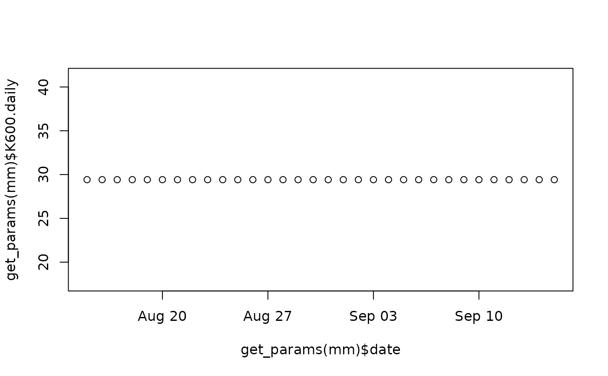
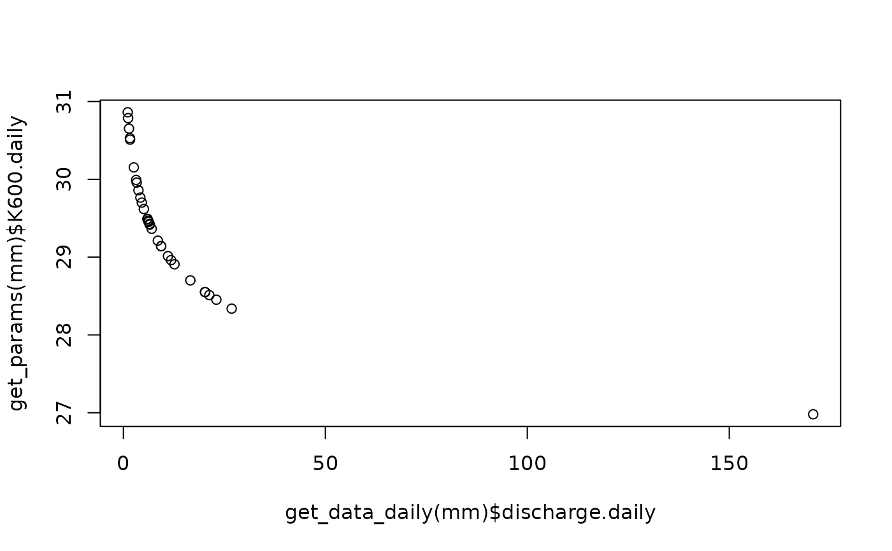
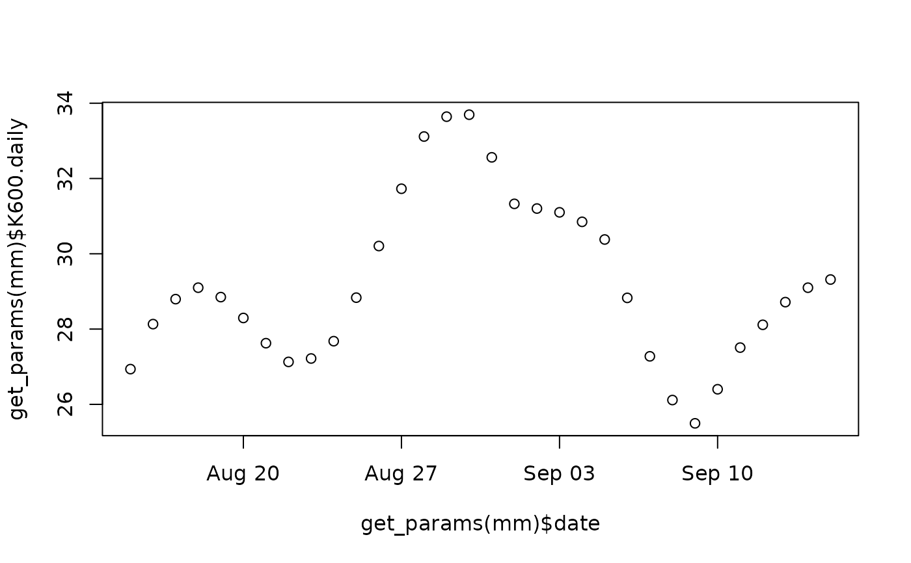
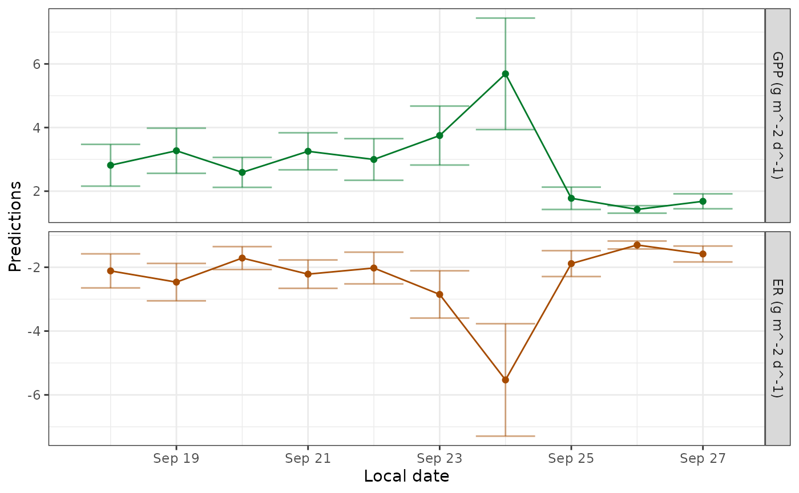
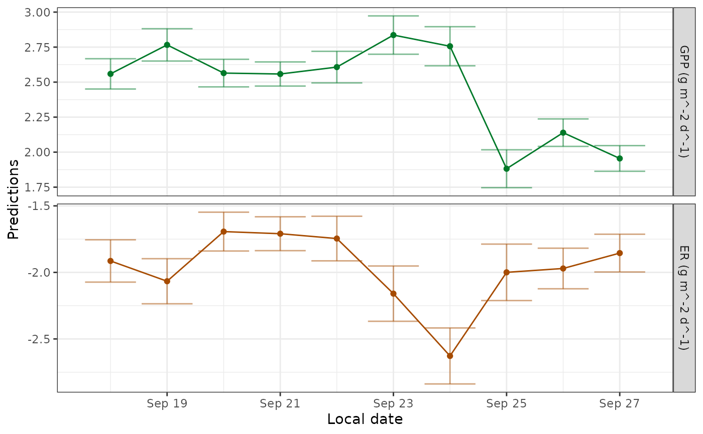

Combine a time series of K estimates to predict consistent values
Source:R/metab_Kmodel.R
metab_Kmodel.RdTakes daily estimates of K, usually from nighttime regression, and regresses against predictors such as discharge.daily. Returns a metab_Kmodel object that only predicts daily K, nothing else.
Usage
metab_Kmodel(
specs = specs(mm_name("Kmodel")),
data = mm_data(solar.time, discharge, velocity, optional = c("all")),
data_daily = mm_data(date, K600.daily, K600.daily.lower, K600.daily.upper,
discharge.daily, velocity.daily, optional = c("K600.daily.lower", "K600.daily.upper",
"discharge.daily", "velocity.daily")),
info = NULL
)Arguments
- specs
A list of model specifications and parameters for a model. Although this may be specified manually (it's just a list), it is easier and safer to use
specs()to generate the list, because the set of required parameters and their defaults depends on the model given in themodel_nameargument tospecs. The help file forspecs()lists the necessary parameters, describes them in detail, and gives default values.- data
A data frame or tibble of input data at the temporal resolution of raw observations (unit-value). Columns must have the same names, units, and format as the default. The solar.time column must also have a timezone code ('tzone' attribute) of 'UTC'. See the 'Formatting
data' section below for a full description.- data_daily
A data frame or tibble containing inputs with a daily timestep. See the 'Formatting
data_daily' section below for a full description.- info
Any information, in any format, that you would like to store within the metab_model object.
Value
A metab_Kmodel object containing the fitted model. Inspect it with
the functions in metab_model_interface().
Details
Possible approaches:
Mean: Predict K as the mean of all K values.
Weighted mean: Predict K as the mean of all K values, weighted by the inverse confidence intervals of the input K values.
KvQ: Regress K against Q, tending toward the overall mean in ranges of Q with sparse data.
Weighted KvQ: Regress K against Q, tending toward the overall mean in ranges of Q with sparse data and weighting high-confidence K values more heavily.
T smoother: Predict K using a loess or spline smoother over time.
Q smoother: Predict K using a loess or spline smoother over
discharge.daily.TQ smoother: Predict K using a loess or spline smoother over time and
discharge.daily.
See also
Other metab_model:
metab_bayes(),
metab_mle(),
metab_night(),
metab_sim()
Examples
library(dplyr)
# create example data
set.seed(24842)
example_Ks <- data.frame(date=seq(as.Date("2012-08-15"),as.Date("2012-09-15"),
as.difftime(1,units='days')), discharge.daily=exp(rnorm(32,2,1)), K600.daily=rnorm(32,30,4)) |>
mutate(K600.daily.lower=K600.daily-5, K600.daily.upper=K600.daily+6)
# mean
mm <- metab_Kmodel(
specs(mm_name('Kmodel', engine='mean')),
data_daily=example_Ks) # two warnings expected for engine='mean'
get_params(mm)
#> date K600.daily K600.daily.sd warnings errors
#> 1 2012-08-15 29.41813 NA overall warnings
#> 2 2012-08-16 29.41813 NA overall warnings
#> 3 2012-08-17 29.41813 NA overall warnings
#> 4 2012-08-18 29.41813 NA overall warnings
#> 5 2012-08-19 29.41813 NA overall warnings
#> 6 2012-08-20 29.41813 NA overall warnings
#> 7 2012-08-21 29.41813 NA overall warnings
#> 8 2012-08-22 29.41813 NA overall warnings
#> 9 2012-08-23 29.41813 NA overall warnings
#> 10 2012-08-24 29.41813 NA overall warnings
#> 11 2012-08-25 29.41813 NA overall warnings
#> 12 2012-08-26 29.41813 NA overall warnings
#> 13 2012-08-27 29.41813 NA overall warnings
#> 14 2012-08-28 29.41813 NA overall warnings
#> 15 2012-08-29 29.41813 NA overall warnings
#> 16 2012-08-30 29.41813 NA overall warnings
#> 17 2012-08-31 29.41813 NA overall warnings
#> 18 2012-09-01 29.41813 NA overall warnings
#> 19 2012-09-02 29.41813 NA overall warnings
#> 20 2012-09-03 29.41813 NA overall warnings
#> 21 2012-09-04 29.41813 NA overall warnings
#> 22 2012-09-05 29.41813 NA overall warnings
#> 23 2012-09-06 29.41813 NA overall warnings
#> 24 2012-09-07 29.41813 NA overall warnings
#> 25 2012-09-08 29.41813 NA overall warnings
#> 26 2012-09-09 29.41813 NA overall warnings
#> 27 2012-09-10 29.41813 NA overall warnings
#> 28 2012-09-11 29.41813 NA overall warnings
#> 29 2012-09-12 29.41813 NA overall warnings
#> 30 2012-09-13 29.41813 NA overall warnings
#> 31 2012-09-14 29.41813 NA overall warnings
#> 32 2012-09-15 29.41813 NA overall warnings
plot(get_params(mm)$date, get_params(mm)$K600.daily)

# linear model
mm <- metab_Kmodel(
specs(mm_name('Kmodel', engine='lm'), predictors='discharge.daily'),
data_daily=example_Ks)
get_params(mm)
#> date K600.daily K600.daily.sd warnings errors
#> 1 2012-08-15 29.48773 NA
#> 2 2012-08-16 29.45253 NA
#> 3 2012-08-17 30.52907 NA
#> 4 2012-08-18 29.36423 NA
#> 5 2012-08-19 26.97996 NA
#> 6 2012-08-20 29.85889 NA
#> 7 2012-08-21 29.41888 NA
#> 8 2012-08-22 29.21206 NA
#> 9 2012-08-23 28.90789 NA
#> 10 2012-08-24 28.55220 NA
#> 11 2012-08-25 30.51001 NA
#> 12 2012-08-26 28.45314 NA
#> 13 2012-08-27 30.15313 NA
#> 14 2012-08-28 29.14110 NA
#> 15 2012-08-29 28.96144 NA
#> 16 2012-08-30 29.49264 NA
#> 17 2012-08-31 28.70135 NA
#> 18 2012-09-01 30.78642 NA
#> 19 2012-09-02 29.42760 NA
#> 20 2012-09-03 28.33825 NA
#> 21 2012-09-04 29.61804 NA
#> 22 2012-09-05 29.14045 NA
#> 23 2012-09-06 29.01319 NA
#> 24 2012-09-07 29.95855 NA
#> 25 2012-09-08 29.99182 NA
#> 26 2012-09-09 28.54950 NA
#> 27 2012-09-10 29.76544 NA
#> 28 2012-09-11 29.46747 NA
#> 29 2012-09-12 29.70034 NA
#> 30 2012-09-13 28.51264 NA
#> 31 2012-09-14 30.65190 NA
#> 32 2012-09-15 30.86205 NA
plot(get_data_daily(mm)$discharge.daily, get_params(mm)$K600.daily)

# loess
mm <- metab_Kmodel( ### breaks ###
specs(mm_name('Kmodel', engine='loess'), predictors='date', other_args=list(span=0.4)),
data_daily=example_Ks)
get_params(mm)
#> date K600.daily K600.daily.sd warnings errors
#> 1 2012-08-15 26.93642 1.136389
#> 2 2012-08-16 28.13190 1.087341
#> 3 2012-08-17 28.79526 1.069291
#> 4 2012-08-18 29.09960 1.071040
#> 5 2012-08-19 28.84944 1.075185
#> 6 2012-08-20 28.29487 1.079092
#> 7 2012-08-21 27.62516 1.075342
#> 8 2012-08-22 27.12816 1.079242
#> 9 2012-08-23 27.21836 1.074020
#> 10 2012-08-24 27.67841 1.078880
#> 11 2012-08-25 28.83481 1.073739
#> 12 2012-08-26 30.20604 1.076872
#> 13 2012-08-27 31.72782 1.070802
#> 14 2012-08-28 33.11495 1.073499
#> 15 2012-08-29 33.64264 1.068786
#> 16 2012-08-30 33.69489 1.073006
#> 17 2012-08-31 32.56211 1.070038
#> 18 2012-09-01 31.32665 1.074744
#> 19 2012-09-02 31.20208 1.070357
#> 20 2012-09-03 31.10106 1.074969
#> 21 2012-09-04 30.84886 1.071741
#> 22 2012-09-05 30.37960 1.076465
#> 23 2012-09-06 28.82896 1.072684
#> 24 2012-09-07 27.27600 1.079072
#> 25 2012-09-08 26.11465 1.076778
#> 26 2012-09-09 25.49586 1.082287
#> 27 2012-09-10 26.40117 1.076760
#> 28 2012-09-11 27.50791 1.077389
#> 29 2012-09-12 28.11343 1.072039
#> 30 2012-09-13 28.71594 1.069151
#> 31 2012-09-14 29.09925 1.084802
#> 32 2012-09-15 29.31613 1.132190
plot(get_params(mm)$date, get_params(mm)$K600.daily)

## 3-phase workflow (sort of like complete pooling) for estimating K within
## days, then K across days, then GPP and ER within days
# 1. data and specifications for both of the MLE models
dat <- data_metab('10','15')
mle_specs <- specs(mm_name('mle'))
# fit a first-round MLE and extract the K estimates
mm1 <- metab_mle(mle_specs, data=dat)
K600_mm1 <- get_params(mm1, uncertainty='ci') |>
select(date, K600.daily, K600.daily.lower, K600.daily.upper)
# smooth the K600s
mm2 <- metab_Kmodel(specs(mm_name('Kmodel', engine='mean'),
day_start=-1, day_end=23), data_daily=K600_mm1)
K600_mm2 <- get_params(mm2) |> select(date, K600.daily)
# refit the MLE with fixed K
mm3 <- metab_mle(mle_specs, data=dat, data_daily=K600_mm2)
get_params(mm3, fixed='stars')
#> date GPP.daily GPP.daily.sd ER.daily ER.daily.sd K600.daily warnings
#> 1 2012-09-18 2.558979 0.05519044 -1.913915 0.08116143 28.44894*
#> 2 2012-09-19 2.765987 0.05888406 -2.066356 0.08646030 28.44894*
#> 3 2012-09-20 2.564581 0.05024763 -1.693337 0.07446124 28.44894*
#> 4 2012-09-21 2.558030 0.04396162 -1.709250 0.06493983 28.44894*
#> 5 2012-09-22 2.607292 0.05752125 -1.745543 0.08553130 28.44894*
#> 6 2012-09-23 2.835975 0.06980850 -2.159617 0.10599572 28.44894*
#> 7 2012-09-24 2.756249 0.07120201 -2.627882 0.10734383 28.44894*
#> 8 2012-09-25 1.881598 0.06901491 -1.999497 0.10824960 28.44894*
#> 9 2012-09-26 2.139146 0.05002992 -1.970511 0.07780874 28.44894*
#> 10 2012-09-27 1.954997 0.04672300 -1.854895 0.07239294 28.44894*
#> errors
#> 1
#> 2
#> 3
#> 4
#> 5
#> 6
#> 7
#> 8
#> 9
#> 10
predict_metab(mm3)
#> # A tibble: 10 × 10
#> date GPP GPP.lower GPP.upper ER ER.lower ER.upper msgs.fit
#> <date> <dbl> <dbl> <dbl> <dbl> <dbl> <dbl> <chr>
#> 1 2012-09-18 2.56 2.45 2.67 -1.91 -2.07 -1.75 " "
#> 2 2012-09-19 2.77 2.65 2.88 -2.07 -2.24 -1.90 " "
#> 3 2012-09-20 2.56 2.47 2.66 -1.69 -1.84 -1.55 " "
#> 4 2012-09-21 2.56 2.47 2.64 -1.71 -1.84 -1.58 " "
#> 5 2012-09-22 2.61 2.49 2.72 -1.75 -1.91 -1.58 " "
#> 6 2012-09-23 2.84 2.70 2.97 -2.16 -2.37 -1.95 " "
#> 7 2012-09-24 2.76 2.62 2.90 -2.63 -2.84 -2.42 " "
#> 8 2012-09-25 1.88 1.75 2.02 -2.00 -2.21 -1.79 " "
#> 9 2012-09-26 2.14 2.04 2.24 -1.97 -2.12 -1.82 " "
#> 10 2012-09-27 1.95 1.86 2.05 -1.85 -2.00 -1.71 " "
#> # ℹ 2 more variables: warnings <chr>, errors <chr>
plot_metab_preds(mm1)

plot_metab_preds(mm3)
